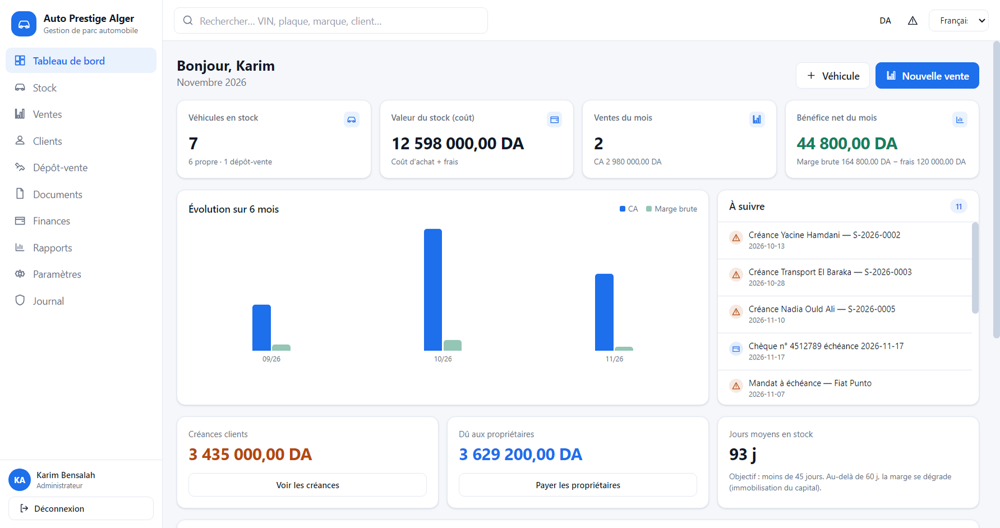

Showroom DZ
Desktop app · 2026Management software for Algerian car showrooms: own and consigned stock, sales with installments and trade-ins, consignment commissions, legal invoicing in French and Arabic, reports, roles and audit trail — all on one machine with no Internet connection.
- Money stored as integer centimes; invoices numbered without gaps, issued documents locked.
- PDF printed from the same HTML as the live preview, plus Excel export with real formulas.
- 35 unit tests and 27 end-to-end checks, including backup → wipe → restore.